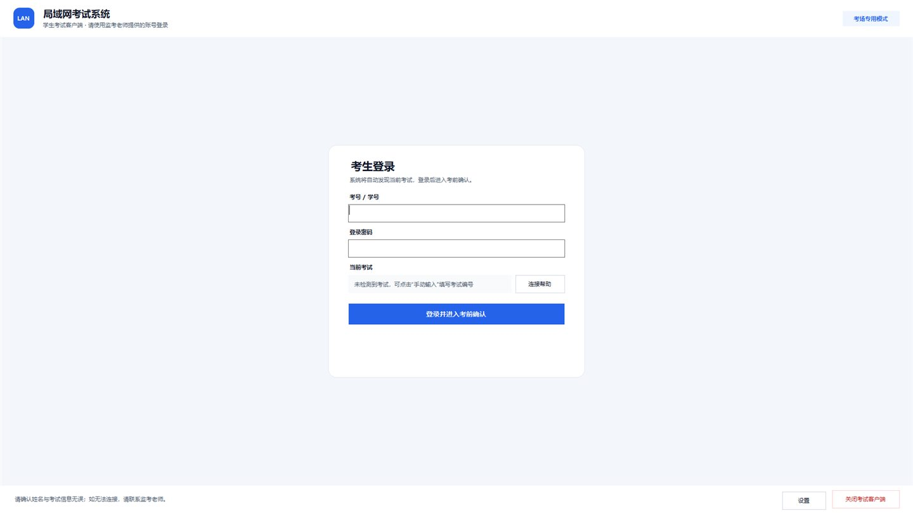
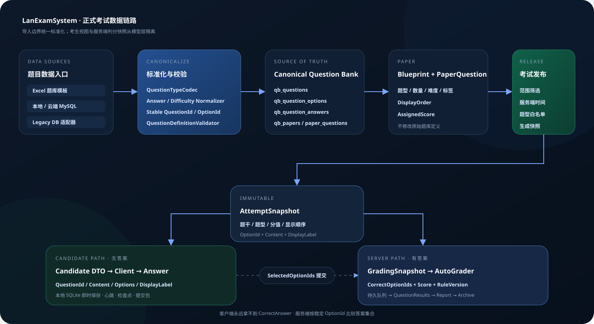

标准化机房考试
按专业大类和班级定向发布，适配公共机房终端，统一输出成绩与教师视角报告。
- 班级与专业筛选
- 考生身份确认
- 异常暂停与续考
LanExamSystem 面向高校、培训机构与企业内训，统一题库、组卷、定向发布、考生作答、异常恢复、集中交卷、自动判分、成绩报告和审计归档。

不是把纸面考试简单搬到电脑上，而是让组织者知道何时可发布、异常时如何恢复、提交后如何确认。
按专业大类和班级定向发布，适配公共机房终端，统一输出成绩与教师视角报告。
从 Excel 或 MySQL 题库导入到组卷、发布、判分和归档，减少重复人工操作。
数据停留在组织局域网内，适合内训考试、岗位基础知识测评和内部竞赛。
正式链路以服务端时间、不可变快照、稳定 QuestionId / OptionId 和持久化任务为基础。
Excel、本地 MySQL、云端 MySQL 统一进入标准题库；v1 正式限制单选、多选、判断三类题型。
按专业大类、班级筛选本场考生，使用服务端时间控制登录窗口与个人考试时长。
答题进度以随机轻量心跳更新，教师端查看 IP、在线状态、计时状态和最后同步时间。
单题作答即时写入本地 SQLite；服务端检查点用于换机恢复，旧快照不会覆盖本地较新答案。
考生 DTO 与 candidate-v1 包从类型层不包含正确答案和判分规则，标准答案只在服务端快照中使用。
答卷进入持久化判分队列，教师端查看成绩并导出 PDF / HTML 报告，保留哈希与审计信息。
系统把“恢复”放进正式考试链路：答案每次变化立即持久化，登录凭据则不跨重启保存。考生重新开机后必须手动登录，认证通过后再合并恢复数据。

题库定义经过组卷与发布形成不可变 AttemptSnapshot，再分别映射到考生视图和服务端判分快照。

统一题型、答案和 OptionId，生成试卷关系。
设置登录时间、考试时长、专业与班级范围。
服务端冻结试题快照，客户端即时保存答案。
答卷校验、上传受理，进入持久化判分队列。
教师端查看结果，导出报告并保留审计证据。
当前三张素材均来自真实运行界面或已核验的项目架构图，后续可以继续扩展更多截图。
可使用按钮、分页圆点或键盘左右方向键切换。
以下要求来自当前代码目标框架和项目文档，不用宣传口径替代真实兼容性。
| 组件 | 当前环境要求 | 在考试中的职责 |
|---|---|---|
| 考生客户端 | Windows 7 SP1 / 10 / 11，.NET Framework 4.8，x86 | 登录、答题、本地保存、心跳、检查点、交卷与考试环境控制 |
| 教师端 / 服务端 | 64 位 Windows 10 22H2 / 11 / Windows Server 2019+；建议自包含发布 | 考试发布、服务端计时、快照、答卷受理、判分队列、报告与终端管控 |
| 数据服务 | MySQL 8.x，建议 utf8mb4；考生端本地 SQLite | 题库、考试记录、快照、任务、审计与本地答案持久化 |
| 典型网络 | 同一可靠局域网，目标场景 100 台考生机 + 1 台教师机 | TCP 指令/心跳、HTTP 包分发与上传、UDP 自动发现 |
联系时建议提供使用单位类型、考生机数量、终端操作系统、网络结构、考试题型和预计使用时间。